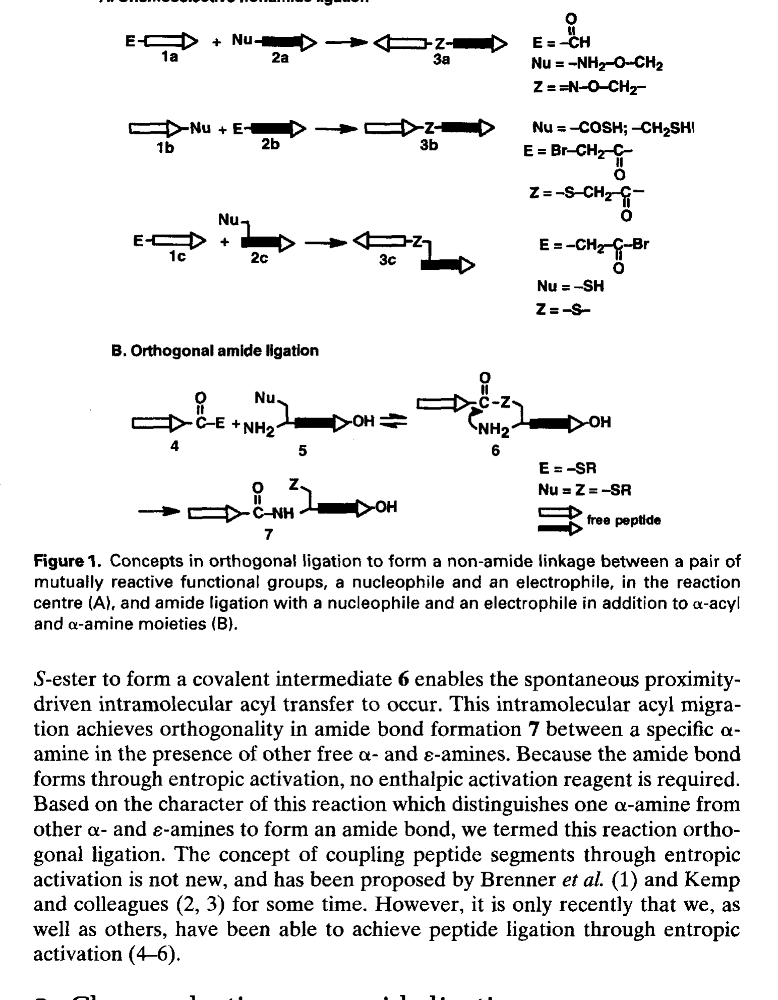
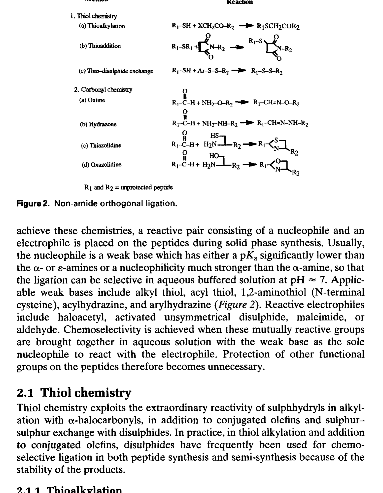
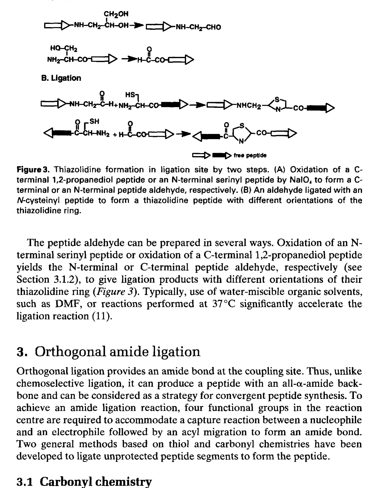
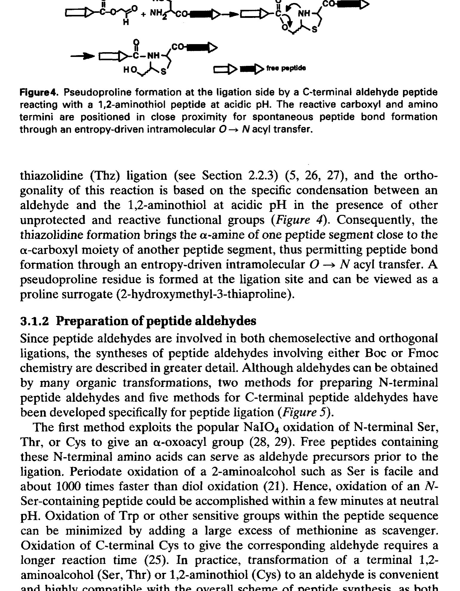
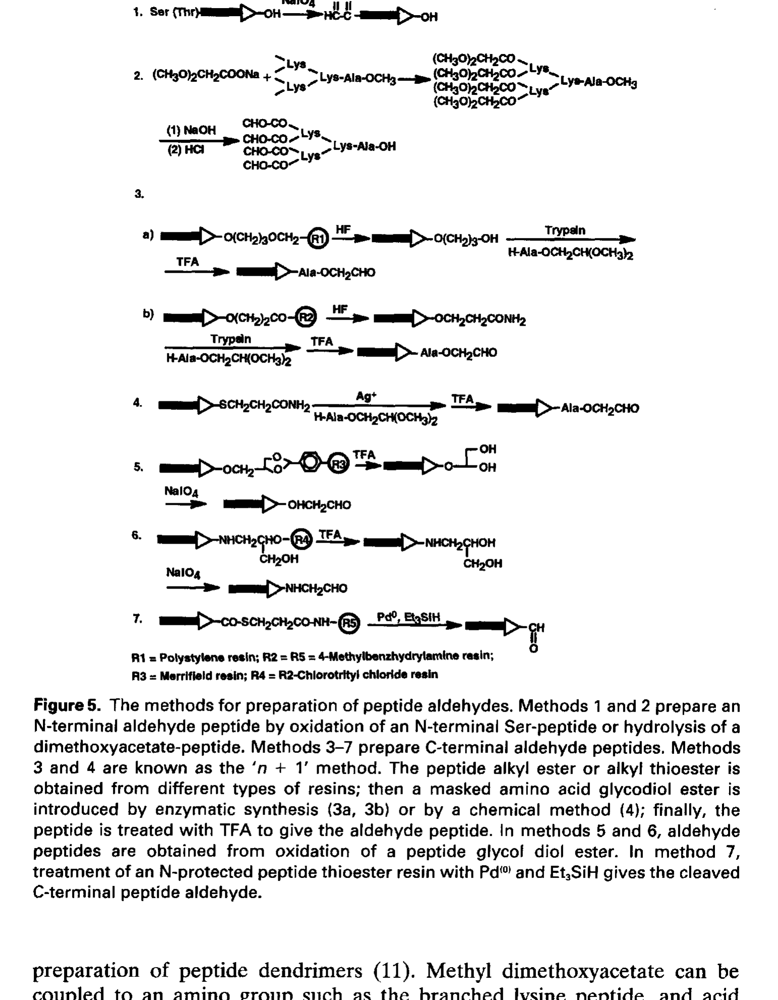
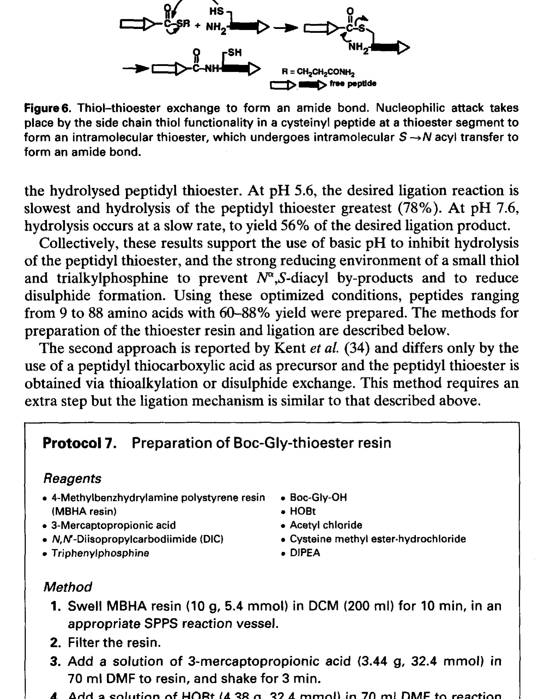
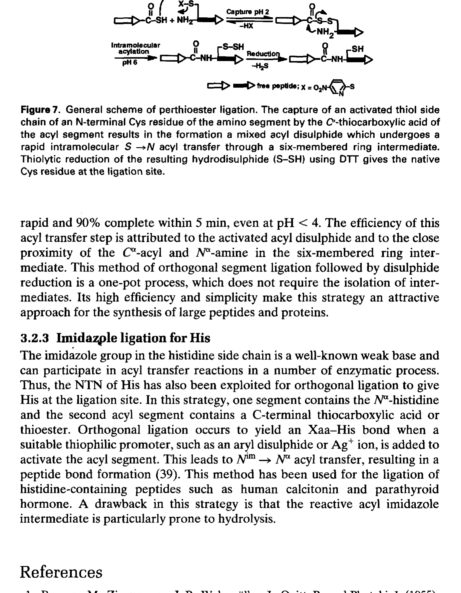

第十一章 Chemoselective and Orthogonal Ligation Techniques 化学选择性与正交连接技术
作者：James P. Tam & Y.-A. Lu
书页范围：pp. 243–264
蛋白质的全合成（total synthesis of proteins）一直是化学家的终极目标之一。传统 SPPS 在合成长度上有固有限制——通常不超过 50–60 个氨基酸残基，超过此长度后偶联效率的累积效应使产物纯度急剧下降。
化学选择性连接（chemoselective ligation）技术的出现彻底改变了这一局面。核心思想：将两条 unprotected 肽段（一段含 C端硫酯，另一段含 N端 Cys）在水相中通过高度选择性的化学反应连接起来，形成天然肽键或非天然连接键。无需保护基，水相中进行，实现了"真正的化学选择性"。
James P. Tam 是这一领域的先驱，本章系统回顾了从非酰胺连接到正交酰胺连接的各种策略。

Figure 1. 正交连接形成非酰胺键的概念示意图（p.244）
如 Figure 1 所示，正交连接的核心在于：两个功能基团 X 和 Y 在水相中只彼此反应，不与肽链中其他官能团（–COOH, –NH2, –SH, –OH）发生副反应。这种高度选择性使无保护基条件下连接两条肽段成为可能。
非酰胺连接指通过非天然酰胺键（如硫酯键 thioester、肟键 oxime、腙键 hydrazone、噻唑烷 thiazolidine 等）将两个肽段连接起来的策略。共同特点：利用"化学选择性捕获"（chemoselective capture）原理——水相、无保护基条件下两个互补基团高效率偶联。

Figure 2. 非酰胺正交连接策略汇总（p.245）
Figure 2 展示了主要的非酰胺连接策略：
| 连接类型 | 反应基团 A | 反应基团 B | 产物连接键 |
|---|---|---|---|
| 硫酯交换 (Thioester exchange) | C端硫酯 (–COSR) | N端 Cys (–SH) | 硫酯键->酰胺键 (NCL) |
| 肟连接 (Oxime ligation) | 醛 (–CHO) | 氨氧基 (–ONH2) | 肟键 (–CH=N–O–) |
| 腙连接 (Hydrazone ligation) | 醛 (–CHO) | 肼 (–NHNH2) | 腙键 (–CH=N–NH–) |
| 噻唑烷 (Thiazolidine) | C端醛肽 | N端 Cys | 噻唑烷环 |
| 噁唑烷 (Pseudoproline) | C端醛肽 | N端 Ser/Thr | 噁唑烷环 |
硫醇 (–SH) 与羰基 (C=O) 的反应是非酰胺连接的核心化学基础。在弱酸性水溶液（pH 3–5）下，硫醇可高选择性地与醛基或硫酯基反应，分别形成硫代半缩醛 (thiohemiacetal) 或发生硫酯交换。
Tam 等利用这一化学原理开发了多种连接策略：
硫醇-醛反应 -> 形成噻唑烷 (thiazolidine) 或噁唑烷 (oxazolidine) 环
硫醇-硫酯交换 -> 形成新硫酯，经 S->N 酰基迁移形成天然酰胺键 (NCL 基础)
氨氧基-醛反应 -> 形成肟键 (oxime bond)
主要优点：（1）水相中进行；（2）无需保护基；（3）条件温和（室温、近中性 pH）；（4）化学选择性极高。局限性：非酰胺连接产生的连接键并非天然肽键，可能影响蛋白质结构和功能。
噻唑烷连接是 Tam 课题组于 1990 年代开发的非酰胺连接策略。利用肽 C端醛基 (glyoxyl group) 与另一条肽 N端 Cys 的硫醇和氨基发生双功能反应，形成环状噻唑烷 (thiazolidine ring)。

Figure 3. 噻唑烷形成：两步连接机制（p.252）
如 Figure 3 所示，噻唑烷连接分两步：
第一步——化学选择性捕获 (Chemoselective Capture)：C端醛肽的醛基与 N端 Cys 的 –SH 在弱酸 (pH 3–5) 下快速反应，形成硫代半缩醛 (thiohemiacetal)。此步快速可逆。
第二步——环化 (Cyclization)：硫代半缩醛中间体的羟基被 Cys 的 alpha-氨基进攻，发生分子内环化，脱水形成稳定的五元环——噻唑烷 (thiazolidine)。此步将可逆的硫代半缩醛转化为稳定环状产物，驱动反应正向进行。
整个反应的驱动力来自噻唑烷环的热力学稳定性。在 pH 3–5 条件下，醛基与 Cys 高选择性地生成噻唑烷，其他氨基酸残基不参与反应。
优点：水相、弱酸、室温，无需保护基，化学选择性极高
缺点：噻唑烷环不是天然肽键，引入了额外的环状结构
应用：肽段偶联、环肽合成、连接中间体
注意：噻唑烷在酸性条件稳定，中性/碱性可缓慢水解
当 N端氨基酸为 Ser 或 Thr（而非 Cys）时，侧链羟基可替代硫醇参与反应，形成噁唑烷 (oxazolidine) 环——即"假脯氨酸" (pseudoproline, psiPro)。

Figure 4. 假脯氨酸形成：C端醛肽与 N端 Ser/Thr 反应（p.253）
如 Figure 4 所示，C端醛肽的醛基与 N端 Ser/Thr 的侧链 –OH 和 alpha-氨基反应：
第一步：醛基与 Ser/Thr 侧链 –OH 形成半缩醛 (hemiacetal)
第二步：alpha-氨基进攻半缩醛，脱水环化形成噁唑烷环
噁唑烷环结构类似脯氨酸 (proline)，因此称为"假脯氨酸"。其引入可改变肽链构象，减少 beta-sheet 聚集，在 SPPS 中也用作可逆修饰以提高合成效率。
将二肽构建体 (dipeptide building block) 中的 Ser/Thr 残基预先转化为假脯氨酸形式，可显著改善困难序列 (difficult sequences) 的合成：
减少树脂上肽链聚集 (on-resin aggregation)
提高偶联效率
合成完成后 TFA 切割即可去除假脯氨酸，恢复天然 Ser/Thr
肽醛 (peptide aldehyde) 是噻唑烷连接和假脯氨酸连接的关键前体。在 SPPS 中引入 C端醛基需要特殊策略，因为醛基对碱敏感。

Figure 5. 肽醛制备方法汇总（p.254）
| 方法 | 原理 | 优缺点 |
|---|---|---|
| Weinreb 酰胺法 | C端转化为 Weinreb 酰胺 (N-methoxy-N-methylamide)，用 LiAlH4/DIBAL-H 还原为醛 | 通用但需溶液相操作 |
| 树脂连接臂法 | 使用醛型连接臂 (aldehyde linker)，氧化裂解或光解释放醛 | 适用于固相但连接臂复杂 |
| Glyoxyl 引入 | SPPS 最后偶联乙醇酸衍生物，再氧化为醛 | 简单但需控制氧化 |
| Boc-SPPS + HF | 以特殊连接臂承载醛基前体，HF 切割释放醛 | 避免哌啶对醛基的破坏 |
Boc 化学更适合制备肽醛——TFA 脱保护和 HF 切割对醛基兼容性较好。Fmoc 化学中的哌啶 (piperidine) 是强碱，易导致醛基 aldol 缩合或 Cannizzaro 反应。使用 Fmoc 化学时需特殊连接臂（安全醛基前体），在切割阶段才释放醛基。
NCL 是目前蛋白质全合成的"金标准"方法，由 Kent 课题组于 1994 年首次报道。巧妙利用硫酯交换和 S->N 酰基迁移两个连续反应，在水相中实现天然酰胺键的形成——连接技术中最具里程碑意义的突破。

Figure 6. 硫醇-硫酯交换形成酰胺键的详细机制（p.259）
如 Figure 6 所示，NCL 分两个关键步骤：
第一步——可逆硫酯交换 (Reversible Transthioesterification)：肽段 I 的 C端硫酯 (–COSR) 与肽段 II 的 N端 Cys 侧链 –CH2SH 发生硫酯交换，形成新硫酯中间体 (peptide I–CO–S–CH2–Cys–peptide II)。此步可逆，但 Cys 的 alpha-氨基邻近性使第二步成为可能。
第二步——S->N 酰基迁移 (S->N Acyl Transfer)：硫酯中间体中 Cys 的 alpha-氨基 (–NH2) 进攻硫酯羰基碳，发生分子内 S->N 酰基迁移，生成天然酰胺键 (peptide bond) 并释放 –SH。这是快速、不可逆的反应，由产物酰胺键的热力学稳定性驱动。
净结果：肽段 I C端通过天然酰胺键与肽段 II 的 N端 Cys 连接。关键驱动力——不可逆的 S->N 酰基迁移将平衡拉向产物。
| 特征 | 说明 |
|---|---|
| 化学选择性 | 极高——只有 Cys 的硫醇/氨基组合可实现此反应 |
| 反应条件 | 水相，pH 7–8 (磷酸缓冲液)，室温或 37 C |
| 保护基 | 无需——两条 unprotected 肽段直接反应 |
| 产物连接键 | 天然酰胺键 (peptide bond)，无"疤痕" |
| 必需基团 | 肽 I：C端硫酯 –COSR；肽 II：N端 Cys (–CH2SH + –NH2) |
| 催化剂 | 硫醇催化剂 (MPAA, MESNA) 加速硫酯交换 |
Staudinger 连接由 Bertozzi 和 Raines 课题组独立开发，利用叠氮 (azide, –N3) 与膦 (phosphine, PR3) 的 Staudinger 反应：
肽段 I C端磷酯 (phosphinothioester) + 肽段 II N端叠氮 (–N3)
叠氮与膦反应形成亚胺基膦 (iminophosphorane) 中间体
分子内重排 -> 天然酰胺键 + 膦氧化物副产物
优势：N端不需要 Cys，可用任何氨基酸。但反应速率比 NCL 慢，膦试剂易被空气氧化。
肟连接利用醛基 (aldehyde) 与氨氧基 (aminooxy, –ONH2) 在弱酸 (pH 4–6) 下形成肟键 (oxime bond, –CH=N–O–)。肟键比腙键更稳定，生理条件下不易水解。虽非天然酰胺键，但在某些蛋白质工程应用中可接受。
肽 C端硫酯 (peptide thioester) 是 NCL 的关键前体。但 Fmoc-SPPS 中存在根本矛盾：哌啶 (亲核试剂) 会攻击并切断硫酯键。
Boc-SPPS 中肽链通过硫酯连接臂连接树脂。合成完成后 HF/TFMSA 切割，直接释放 C端硫酯。因 Boc 化学用 TFA 脱保护（非碱），硫酯全程稳定。
使用 Boc-amino acids 逐步偶联
硫酯连接臂 (如 MBHA-thioester linker) 承载肽链
HF 切割 -> 直接得到肽 C端硫酯
为克服哌啶对硫酯的破坏，发展了多种策略：
| 策略 | 原理 | 说明 |
|---|---|---|
| 安全保护硫酯连接臂 | 对哌啶稳定、切割时释放硫酯的特殊连接臂 | 如 bis(2-mercaptoethyl) sulfide linker |
| Indirect thioesterification | 先合成肽酰肼 (peptidyl hydrazide)，切割后氧化为酰基叠氮再转化为硫酯 | Liu 课题组肼-硫酯转化法 |
| Intein-mediated (EPL) | 重组表达的 intein 融合蛋白在生物体系中制备硫酯 | Expressed Protein Ligation |
| N->S 酰基迁移法 | 利用 Cys 侧链硫醇在酸性条件下发生 N->S 酰基迁移生成硫酯 | 基于 Cys 分子内迁移 |
这些策略使 Fmoc-SPPS 与 NCL 的结合成为可能，极大扩展了蛋白质全合成的适用范围。
过硫酯连接 (perthioester ligation) 由 Tam 课题组开发，利用过硫酯 (perthioester, –CO–S–S–R) 作为活化基团。巧妙利用了硫化学的多氧化态特性。

Figure 7. 过硫酯连接的通式（p.262）
如 Figure 7 所示，过硫酯连接的核心步骤：
捕获活化硫醇侧链：一条肽链中的硫醇基被活化试剂（硫化试剂）捕获，形成过硫醇 (perthiol, –S–SH) 或过硫酯 (perthioester, –CO–S–S–R)。
过硫酯与 Cys 反应：过硫酯基团比普通硫酯反应活性更高，可与 N端 Cys 快速硫酯交换，随后 S->N 酰基迁移形成天然酰胺键。
过硫酯连接的优势：较高的反应活性和良好的化学选择性，是 NCL 的有益补充，特别适用于特定场景。
| 连接策略 | 产物连接键 | 需要 Cys？ | 反应条件 | 适用场景 |
|---|---|---|---|---|
| NCL | 天然酰胺键 | 是 (N端 Cys) | pH 7–8, 水相, rt | 蛋白质全合成 (金标准) |
| Staudinger | 天然酰胺键 | 否 | pH 7–8, 水相 | 无 Cys 位点的连接 |
| Thiazolidine | 噻唑烷环 | 是 (N端 Cys) | pH 3–5, 水相 | 环肽合成、中间体 |
| Pseudoproline | 噁唑烷环 | 否 (Ser/Thr) | pH 3–5, 水相 | SPPS 辅助、连接 |
| Oxime | 肟键 (非天然) | 否 | pH 4–6, 水相 | 蛋白质工程、标记 |
| Perthioester | 天然酰胺键 | 是 (N端 Cys) | pH 7–8, 水相 | NCL 补充 |
化学选择性连接 (chemoselective ligation) 是蛋白质全合成的关键突破——在水相中无需保护基实现肽段偶联
非酰胺连接形成非天然连接键（硫酯、肟、腙、噻唑烷等），正交酰胺连接形成天然酰胺键
NCL 是蛋白质全合成的金标准：C端硫酯 + N端 Cys -> 硫酯交换 -> S->N 酰基迁移 -> 天然酰胺键
噻唑啶连接利用 C端醛肽 + N端 Cys -> 五元环，分捕获和环化两步
假脯氨酸连接扩展至 Ser/Thr，形成噁唑烷环，也是 SPPS 中改善困难序列合成的重要技术
肽醛制备在 Boc 化学中可直接实现，Fmoc 化学需要特殊连接臂避免哌啶破坏
肽硫酯制备是 NCL 的关键前体——Boc 化学直接，Fmoc 化学需要特殊策略（安全连接臂、肼法、EPL 等）
过硫酯连接利用过硫酯高反应活性，是 NCL 的有益补充
连接技术的发展使蛋白质全合成从梦想变为现实，也为蛋白质工程和化学生物学提供了强大工具